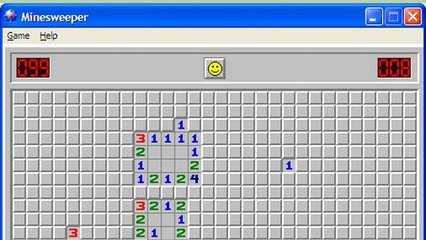

Robert Donner, em 1989, criou um jogo cujo objetivo seria revelar a localização de minas em um campo sem que nenhuma seja detonada.
Para isso o tabuleiro é formado de minas, números e espaços vazios.
As regras são simples :
Se um bloco é um número, ele informará quantas minas estão escondidas nos oito quadrados que o cercam.
Se um bloco é vazio, é porque não há nenhuma mina ao seu redor.
Um bloco pode ser uma mina, nesse caso ele é representado por um símbolo.
O jogador deve usar essas informações para deduzir em que quadrados próximos é seguro clicar.
Dada uma matriz com a posição de cada mina, seu o programa deve preencher o resto do campo (matriz) com números ou com vazios, por exemplo:
*-*
---
---^ Esse é um campo 3x3 que tem duas minas (simbolizadas por *). Devemos preencher dessa forma:

*2*
121
---As minas são simbolizadas com asteriscos * e os campos vazios são simbolizados com sinal de menos -
Mais exemplos no final da página.
Leia uma matriz com n linhas e m colunas com a posição das minas. Preencha o restante da matriz seguindo as regras citadas.
Considere ( 1 <= n, m <= 50).
O número n (linhas)e m(colunas) .
Cada elemento da matriz: * ou -
>>>>>>>>
3 3
***
--*
--*
========
***
25*
-2*
<<<<<<<<
>>>>>>>>
3 3
---
-*-
---
========
111
1*1
111
<<<<<<<<
>>>>>>>>
3 5
*----
----*
---**
========
*1-11
1113*
--1**
<<<<<<<<
>>>>>>>>
1 1
*
========
*
<<<<<<<<O quadrado amarelo é quem é calculado no momento, e os vermelhos são as minas consideradas no cálculo.


Se ainda tiver dúvidas de como funciona, tente jogar um pouco. https://minesweeper.online/pt/new-game